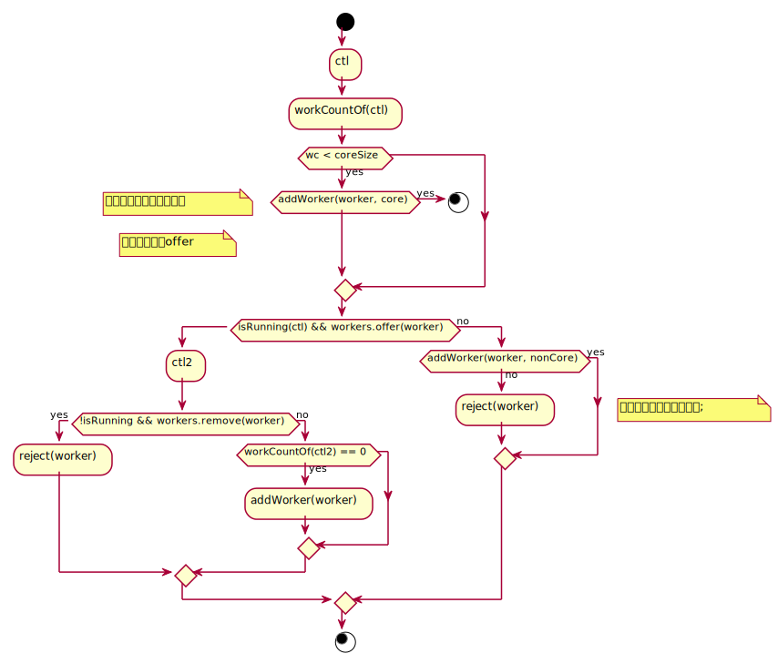

ThreadPoolExecutor
Executor
啃了几天源码，juc里的重头戏终于来了，这次要看的是线程池的代码。
线程是稀缺资源，很容易OOM，新鸟们肆意创建的话，很容易导致系统崩溃。 同时创建线程很耗费时间。有可能你线程里执行的代码所需时间还没创建线程需要的时间长。 为了应对这种情况，大牛们搞了个池化技术。那这样我们就跟着学嘛～懂了原理，再看大牛是怎么做的。
Executor这个接口定义了一个方法executor(Runnable command)，大牛的想法是将线程的创建 和你需要执行的任务解耦开。这种方法是可行的，因为java中线程的创建本来就是通过thread.start()方法，他底层调用了native方法start0()，然后再根据具体的os去实现如何创建 线程。而创建线程后，会调用Runnable接口的run方法执行任务。在最底层其实就已经将任务和线程创建解耦了，那线程池的作用就是帮助我们更好的复用线程这种稀缺资源，避免浪费，同时也提高响应速度。
ExecutorService扩展了Executor的功能，能一直阻塞直到将任务的返回值拿到并返回给任务提交方。
最底层的实现是ThreadPoolExecutor这个线程池类，代码挺复杂，有2000多行，但是核心方法就那几个。分解方法也是老套路，看接口定义、看构造方法&学会使用、看接口方法实现。
接口定义就是在上面了，线程池的使用，例子如下。
package cn.europa.secret.pck04_thread;
import java.util.concurrent.*;
import java.util.concurrent.atomic.AtomicInteger;
public class UsePool {
public static void main(String[] args) {
final AtomicInteger integer = new AtomicInteger();
ThreadPoolExecutor executor = new ThreadPoolExecutor(1,
2,
20,
TimeUnit.SECONDS,
new LinkedBlockingQueue<>(10),
new ThreadFactory() {
@Override
public Thread newThread(Runnable r) {
return new Thread(r, "feng-" + integer.getAndIncrement());
}
});
executor.setRejectedExecutionHandler(new RejectedExecutionHandler() {
@Override
public void rejectedExecution(Runnable r, ThreadPoolExecutor executor) {
System.out.println(r);
}
});
for (int i = 0; i < 100; i++) {
executor.execute(() -> {
System.out.println(Thread.currentThread().getName() + "你好啊");
});
}
try {
Thread.sleep(3000);
} catch (InterruptedException e) {
e.printStackTrace();
}
System.out.println("main end.");
executor.shutdown();
}
}
如图，构造方法还挺多东西的，他的几个概念是 1、核心线程数 2、最大线程数 3、阻塞队列 4、ThreadFactory(一个接口，能让你定义在线程池里如何新建线程，设置线程的一些参数，如 group、isDaemon、name等等线程本身的属性) 5、RejectExecptionHandler(一个接口，能让你自己处理如果任务数太大，如何去拒绝后续任务。比如存储起来后续再补偿执行。） 6、keepAliveTime(一个线程在池里空闲到回收的时间)
到这一步，可以开始想想假如自己实现线程池会有哪些问题，个人有以下几点：
- 新线程的启动。
- 线程如何执行别的任务。
- 线程什么时候结束。
- 线程池的启动、关闭。
追源码
到了最喜欢的啃源码环节，第一次看的时候感觉云里雾里的。但是多看几遍，熟悉的代码记住了后，脑子里越来越像中文逻辑了。画了张流程图，但是不想放出来。

public void execute(Runnable command) {
if (command == null)
throw new NullPointerException();
/*
* Proceed in 3 steps:
*
* 1. If fewer than corePoolSize threads are running, try to
* start a new thread with the given command as its first
* task. The call to addWorker atomically checks runState and
* workerCount, and so prevents false alarms that would add
* threads when it shouldn't, by returning false.
*
* 2. If a task can be successfully queued, then we still need
* to double-check whether we should have added a thread
* (because existing ones died since last checking) or that
* the pool shut down since entry into this method. So we
* recheck state and if necessary roll back the enqueuing if
* stopped, or start a new thread if there are none.
*
* 3. If we cannot queue task, then we try to add a new
* thread. If it fails, we know we are shut down or saturated
* and so reject the task.
*/
int c = ctl.get();
if (workerCountOf(c) < corePoolSize) {
if (addWorker(command, true))
return;
c = ctl.get();
}
if (isRunning(c) && workQueue.offer(command)) {
int recheck = ctl.get();
if (! isRunning(recheck) && remove(command))
reject(command);
else if (workerCountOf(recheck) == 0)
addWorker(null, false);
}
else if (!addWorker(command, false))
reject(command);
}
那这个流程其实就是常问的面试题入口了。但是有意思的点是ctl这个值。看过Doug lea代码的人因该都知道，那些用c语言的经常喜欢将一个变量掰碎了用，读写锁里的state是这样，这里同样是这样。前三位保存线程池的runState，默认RUNNING状态（111000....）。后29位保存线程数目workCount。
那这里的逻辑中文翻译过来大体就是线程数目小于核心线程数，则新增核心线程执行任务。不然尝试往阻塞队列里offer任务。 offer失败了代表线程队列满了，则新增非核心线程数去执行任务。
addWorker
看的出来，addWorker是execute方法调用的很重要的一个方法。
private boolean addWorker(Runnable firstTask, boolean core) {
retry:
for (;;) {
int c = ctl.get();
int rs = runStateOf(c);
// Check if queue empty only if necessary.
// state不是SHUTDOWN以上且如果...看不懂的一堆逻辑。这里RUNNING会直接跳过
if (rs >= SHUTDOWN &&
! (rs == SHUTDOWN &&
firstTask == null &&
! workQueue.isEmpty()))
return false;
// 循环CAS修改ctl
for (;;) {
int wc = workerCountOf(c);
// 判断workCount是否大与核心线程数||最大线程数
if (wc >= CAPACITY ||
wc >= (core ? corePoolSize : maximumPoolSize))
return false;
if (compareAndIncrementWorkerCount(c))
break retry;
c = ctl.get(); // Re-read ctl
if (runStateOf(c) != rs)
continue retry;
// else CAS failed due to workerCount change; retry inner loop
}
}
boolean workerStarted = false;
boolean workerAdded = false;
Worker w = null;
try {
// 新构建个任务，值得注意这个Worker自己也实现了Runnable接口
w = new Worker(firstTask);
final Thread t = w.thread;
if (t != null) {
final ReentrantLock mainLock = this.mainLock;
mainLock.lock();
try {
// Recheck while holding lock.
// Back out on ThreadFactory failure or if
// shut down before lock acquired.
int rs = runStateOf(ctl.get());
if (rs < SHUTDOWN ||
(rs == SHUTDOWN && firstTask == null)) {
if (t.isAlive()) // precheck that t is startable
throw new IllegalThreadStateException();
// 加到set里
workers.add(w);
int s = workers.size();
if (s > largestPoolSize)
largestPoolSize = s;
workerAdded = true;
}
} finally {
mainLock.unlock();
}
if (workerAdded) {
// start线程
t.start();
workerStarted = true;
}
}
} finally {
if (! workerStarted)
addWorkerFailed(w);
}
return workerStarted;
}
到这里，大概表达的意思是这样的，一个工作线程是一个Worker，然后用了set用来存放工作线程，用来记录任务数、已执行任务数等。但是addWorker里偷偷的调用了worker里thread的start方法。而worker的thread是这样来的。threadFactory的newThread的方法Runnable是直接传的this。那说明worker也是实现了Runnable接口。start调用worker的run方法。最终走到runWorker方法里。
接着看runWorker的代码，while循环里一直搁那取任务呢。这个task也就是通过execute提交过来的任务了。最终调用run方法。同样getTask()也要往下跟一跟。
final void runWorker(Worker w) {
Thread wt = Thread.currentThread();
Runnable task = w.firstTask;
w.firstTask = null;
w.unlock(); // allow interrupts
boolean completedAbruptly = true;
try {
while (task != null || (task = getTask()) != null) {
w.lock();
// If pool is stopping, ensure thread is interrupted;
// if not, ensure thread is not interrupted. This
// requires a recheck in second case to deal with
// shutdownNow race while clearing interrupt
if ((runStateAtLeast(ctl.get(), STOP) ||
(Thread.interrupted() &&
runStateAtLeast(ctl.get(), STOP))) &&
!wt.isInterrupted())
wt.interrupt();
try {
beforeExecute(wt, task);
Throwable thrown = null;
try {
task.run();
} catch (RuntimeException x) {
thrown = x; throw x;
} catch (Error x) {
thrown = x; throw x;
} catch (Throwable x) {
thrown = x; throw new Error(x);
} finally {
afterExecute(task, thrown);
}
} finally {
task = null;
w.completedTasks++;
w.unlock();
}
}
completedAbruptly = false;
} finally {
processWorkerExit(w, completedAbruptly);
}
}
到这一步，就能看到问题所在了，原来线程执行别的任务是事先将后续任务都塞在阻塞队列里，然后在这一步一直阻塞着取任务，同时之前设置的keepAliveTime的作用也看出来了，如果timed能超时，timed要么允许核心线程超时，要么workCount > 核心线程数。如果这样的话，就走blockingQueue.poll(time, TimeUnit)这个方法取任务，超时取出null。不然走take方法一直阻塞。如果取出任务是null，则线程后续会结束。那之前的疑问也结束了。
private Runnable getTask() {
boolean timedOut = false; // Did the last poll() time out?
for (;;) {
int c = ctl.get();
int rs = runStateOf(c);
// Check if queue empty only if necessary.
if (rs >= SHUTDOWN && (rs >= STOP || workQueue.isEmpty())) {
decrementWorkerCount();
return null;
}
int wc = workerCountOf(c);
// Are workers subject to culling?
boolean timed = allowCoreThreadTimeOut || wc > corePoolSize;
if ((wc > maximumPoolSize || (timed && timedOut))
&& (wc > 1 || workQueue.isEmpty())) {
if (compareAndDecrementWorkerCount(c))
return null;
continue;
}
try {
Runnable r = timed ?
workQueue.poll(keepAliveTime, TimeUnit.NANOSECONDS) :
workQueue.take();
if (r != null)
return r;
timedOut = true;
} catch (InterruptedException retry) {
timedOut = false;
}
}
}
总结
那其实最后啃下这块代码可以发现线程池的逻辑也就那么回事，我摒弃了很多小细节的代码，只对自己关注的细节啃代码，其他瞥一眼有个印象就好。 总结下来，先execute提交任务，如果wc<core，构建工作者Worker，worker里新建线程。启动此线程执行任务。同时worker又套了一层依赖runnable，执行自己的run方法，套一层runWorker。runWorker又是循环，循环里一直从阻塞队列取任务，然后执行任务的run方法。并且getTask一直等待如果没有到达阈值的话，也就是没有设置超时时间或者允许核心线程超时。这也是为什么主线程不会停止假如没有手动shutdown线程池的话，因为子线程在阻塞着。 像其他的Set这些，留意下就好。